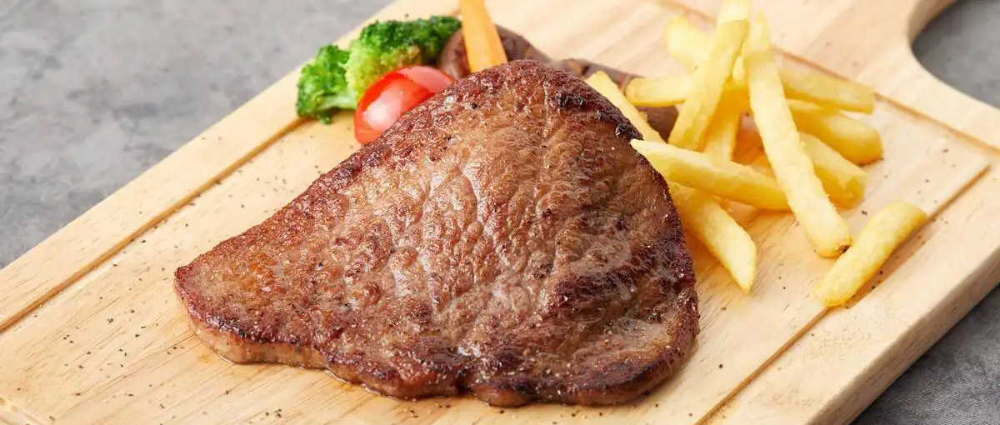
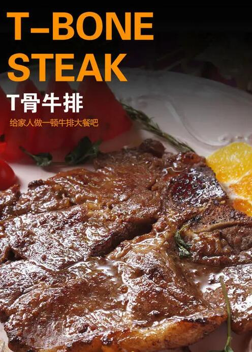

做法
食材准备
牛排 T骨牛排1块
黑胡椒碎 少许
盐 少许
制作步骤
1. 牛排两面均匀撒等量的盐和黑胡椒。抹上少量橄榄油，防止煎的时候粘锅。烤箱预热300F（约150C）。
2. 平底锅（铸铁锅最好）摊少量油，高火烧热油——要热到几乎要冒烟哦——然后调到中火，下牛排，第一面煎3分钟左右。
3. 翻面，这一面煎1-2分钟即可。然后将牛排放入预热好的烤箱，时间根据自己喜欢的口味而定。
4. 出烤箱后，将牛排静止10分钟。
5. 煎牛排的锅中留有汁，这时候可以重新开火，加一点水或者黄油，烧至汁浓稠，淋上牛排即可。
